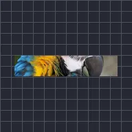

Krullen

Rolt het ene uiteinde van de laag om een cirkel terwijl het andere plat blijft; animeer Verschuiving om hem op of af te rollen. Werkt het best op brede, dunne lagen.
Instellingen
| Instelling | Type | Bereik | Standaard |
|---|---|---|---|
| Verschuiving | Getal | -0.5 tot 1.5 | 0.5 |
| Straal | Getal | 0 tot 50 | 1 |
| Krullen vanaf | Keuze | Links, Rechts | Rechts |
| Richting | Keuze | Omhoog, Omlaag | Omhoog |
| Uitrekken | Getal | 0.01 tot 50 | 1 |